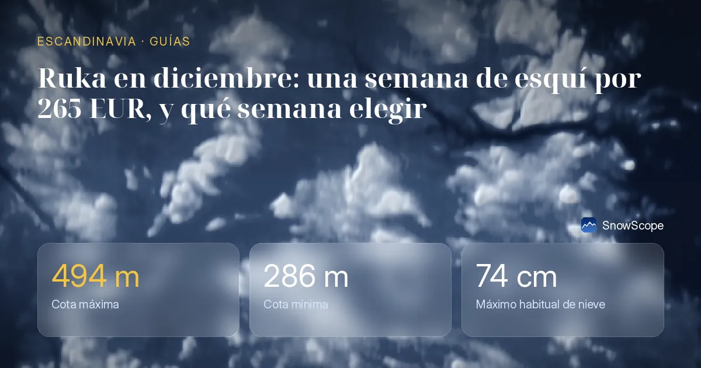

Ruka en diciembre: una semana de esquí por 265 EUR, y qué semana elegir
Un forfait de 6 días para adultos en Ruka cuesta EUR 265 en la temporada 2026-27, uno de los precios fijos más bajos para una semana fuera. La nieve es más complicada: principios de diciembre es poco fiable, pero a partir de mediados de mes las probabilidades cambian bruscamente a tu favor, alcanzando el 85% de inviernos con 30 cm o más durante la semana de Navidad.
Consulta la previsión de nieve en tiempo real de Ruka en la app SnowScopeEspesor de nieve, alertas de nieve polvo y mapa 3D, gratis.
Cuándo ir para las mejores probabilidades de nieve
La nieve en diciembre en Ruka se acumula a lo largo del mes. En la primera semana (1-7 de diciembre) solo el 39% de los inviernos alcanzó 30 cm. En 8-14 de diciembre sube al 61%, y a mediados de mes (15-21 de diciembre) llegas al 72%. La semana de Navidad (22-28 de diciembre) es la más segura: el 85% de los inviernos tenía 30 cm o más para entonces.
El día típico del primer día para encontrar 30 cm sobre el terreno es el 5 de diciembre, pero esto varía de un año a otro. Si principios de diciembre es tu única opción, consulta el mapa de nieve antes de reservar y prepárate para una cobertura fina.


Profundidad a través del mes
En un 15 de diciembre típico, Ruka tiene 36 cm en toda la estación. Para el 24 de diciembre sube a 40 cm, y para la Nochevieja llegas a 46 cm. Estos son los valores medios de 46 inviernos de historial. En un año fino (1 de cada 10), espera solo 20 cm el 15 de diciembre; en un año profundo, 46 cm.
Lo que no encontrarás aquí es profundidad de polvo. Solo el 4% de las semanas de Navidad alcanzan 60 cm o más. Lo que Ruka ofrece en su lugar es nieve consistente, fría y preparada que se mantiene durante toda la temporada. En 46 inviernos, el terreno nunca ha estado desnudo el 15 de diciembre.
La altura no marca casi ninguna diferencia
Ruka es una montaña redondeada y baja con 24 remontes repartidos en 25 km de pistas entre 286 m y 494 m. Como el terreno es suave y no muy alto, nuestro historial de nieve lo trata como una sola zona. La cima no tiene más nieve que la base.
Esta uniformidad es típica de las montañas de Laponia. En el lejano norte, incluso un invierno más cálido se mantiene lo suficientemente frío para conservar una base. El verdadero factor determinante de la profundidad de nieve es la latitud y la época del año, no la altitud en estas laderas suaves.
Coste y timing para una semana de presupuesto
El precio de EUR 265 por 6 días es fijo, sin descuentos durante la temporada. La misma lista de forfaits se aplica en Pyhä-Luosto, 50 km al noroeste, que también ofrece 30 cm a mediados de diciembre en el 72% de los inviernos. El ahorro no está en un forfait más barato sino en elegir fechas fuera de las vacaciones de Navidad, cuando el alojamiento es más fácil de encontrar y a veces más barato.
Una semana del 15-21 de diciembre, o del 8-14 de diciembre si eres flexible, aún puede encontrar buen valor en alojamiento mientras mantienes probabilidades de nieve bien por encima de un cincuenta por ciento.
Qué empacar y qué esperar
Diciembre en la Laponia finlandesa es oscuro. A mediados de mes el sol apenas sale, y durante parte del mes ni siquiera aparece sobre el horizonte. La luz se vuelve azul y rosa durante unas pocas horas por la tarde, y gran parte del esquí sucede en el crepúsculo o con una luz tenue.
El frío es seco y penetrante. Lleva un buen frontal para los paseos entre pistas, manoplas cálidas, protección facial y botas aisladas adecuadas. La tranquilidad de las montañas y la luz extraña hacen que esquiar en diciembre aquí sea como en ningún otro lugar.
Consejos para esquiadores
- Reserva una semana a partir del 15 de diciembre: el 72% de los inviernos tenía 30 cm esa semana, frente al 39% en la primera semana de diciembre.
- La semana de Navidad (22-28 de diciembre) es la opción más segura; el 85% de los inviernos alcanzó 30 cm o más. Planifica una semana completa si es posible para repartir el valor de tu forfait de EUR 265.
- Presupuesta EUR 265 para el forfait, luego enfócate en encontrar alojamiento asequible antes de la avalancha de Navidad.
- Empaca ropa de clima frío adecuada para 46-48°N a nivel del mar en invierno; el frío es severo pero seco. Un frontal es esencial porque la luz del día es mínima.
- Consulta el mapa de nieve unos días antes de viajar; diciembre aún puede sorprender, y la cobertura fina en principios de mes puede ocultar rocas.
Sobre estas cifras
Los espesores de nieve de las estaciones son la nieve más profunda en las pistas altas en la fecha indicada; son estimaciones para una zona, no una medida en un punto. Las previsiones pueden cambiar. Consulta siempre el boletín oficial de aludes antes de salir fuera de pista.
Boletines oficiales de aludes: EAWS – European Avalanche Warning Services
Citar este informe
Para investigación, docencia o prensa: cifras y gráficos reutilizables libremente bajo CC BY 4.0 con esta cita.
SnowScope (2026), Ruka en diciembre: una semana de esquí por 265 EUR, y qué semana elegir, https://snowscope.app/blog/es/2026/11/ruka-december-skiing-finland-early-season-price.html, consultado el 2026-11-14
SnowScope (Atlas Labs). (2026, November 14). Ruka en diciembre: una semana de esquí por 265 EUR, y qué semana elegir. SnowScope snow reports. https://snowscope.app/blog/es/2026/11/ruka-december-skiing-finland-early-season-price.html
BibTeX
@misc{snowscope2026rukadecemberskiingfinlan,
author = {{SnowScope (Atlas Labs)}},
title = {Ruka en diciembre: una semana de esquí por 265 EUR, y qué semana elegir},
year = {2026},
month = nov,
howpublished = {\url{https://snowscope.app/blog/es/2026/11/ruka-december-skiing-finland-early-season-price.html}},
note = {Published 2026-11-14 16:44 UTC; accessed 2026-11-14}
}· CC BY 4.0 · Métodos, datos y herramientas →
Ruka: nieve y temperatura según la altura, este invierno vs el pasado (herramientas) →
Sigue Ruka
Gratis: un aviso cuando llega la nieve y la previsión cada mañana.